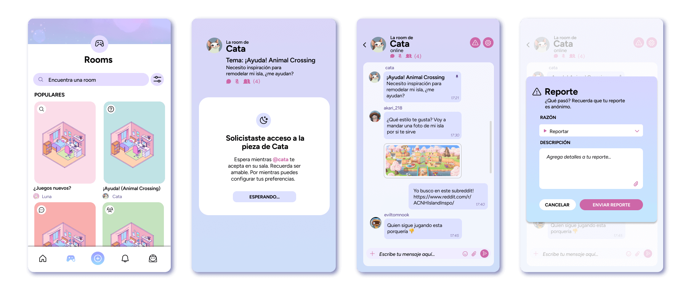
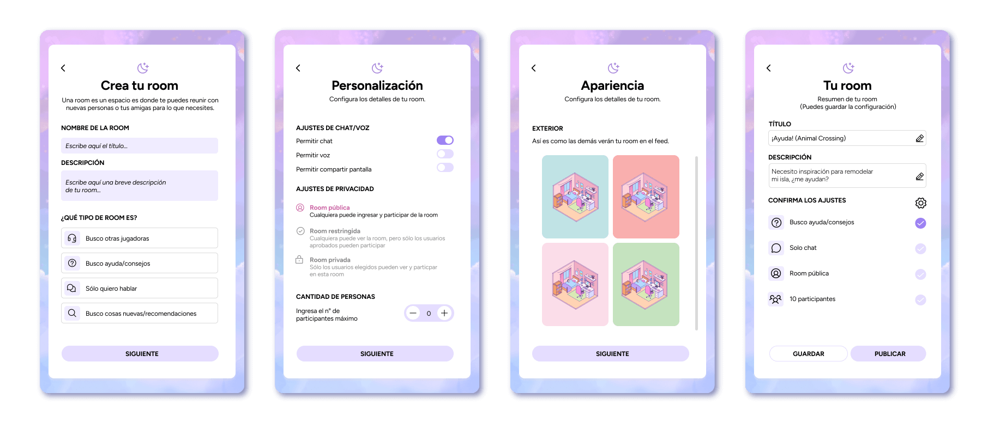

Aplicación de comunicación diseñada específicamente para la comunidad gamer femenina, cuyo foco es la creación de chats personalizados y seguros. El objetivo es garantizar un espacio digital libre de acoso y discriminación.
2023
Diseñadora UX/UI
Figma, Illustrator
Rooms es una aplicación que nace a partir de la investigación sobre los desafíos y problemáticas a las que se enfrentan las mujeres dentro de las comunidades de videojuegos, los cuales son principalmente el acoso sexual, el acoso verbal y la discriminación.
Debido a lo anterior y a pesar de que existen muchas plataformas de comunicación creadas para "gamers", la gran mayoría no tiene como pilar fundamental la creación de un espacio seguro para sus usuarias.
• Crear un espacio digital seguro para las mujeres de la comunidad gamer, ofreciendo una plataforma de comunicación con herramientas de personalización y reporte.
•
Potenciar la creación de la comunidad dentro de la aplicación, a través de un sistema de referidos y recompensas, para potenciar y motivar el uso de la aplicación entre usuarias.
Proceso de investigación y desarrollo de encuestas vía Google Forms para el usuario objetivo. Recopilación de información y creación de User Persona.
Exploración inicial de las pantallas y flujos a realizar a través de arquitectura de información y wireframes.
Creación de un moodboard y definición de estilo para el desarrollo de la aplicación con su respectivo prototipo.
Luego de una serie e iteraciones y definición de moodboard para la aplicación, se realiza el diseño y prototipo interactivo de tres flujo esenciales que se definieron necesarios para el producto.
Ya que a partir de la investigación de usuario se desprende la importancia de la seguridad, se toma la decisión de crear una pestaña de reporte en caso de que alguna usuaria detecte algún comportamiento extraño.
Se creó el concepto de “room” para definir una sala de chat con diversas funciones, la cual es el pilar de la aplicación. La base de este espacio es la personalización, para que cada usuaria lo adecué a sus necesidades.
Una de las interrogantes del proyecto fue cómo asegurar una comunidad principalmente femenina. Se decidió crear un sistema de códigos, donde las mismas usuarias pueden invitar a sus amigas.
Además, para incentivar el uso de este sistema, se da una serie de recompensas para mejorar la experiencia estética de la app.